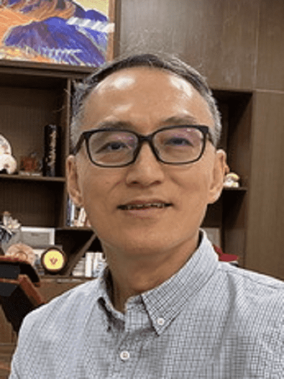

Chair Professor Jyh-Ming Ting
Department of Materials Science and Engineering, National Cheng Kung University, Taiwan
Advancing AEMWE Technology: From Catalysts to Applications
Biography and lecture abstract
Biography
Prof. Jyh-Ming Ting is a Chair Professor in the Department of Materials Science and Engineering at National Cheng Kung University (NCKU), Taiwan. He received his B.S. degree in Nuclear Engineering from National Tsing Hua University and his M.S. and Ph.D. degrees in Materials Science and Engineering from the University of Cincinnati, USA. His research interests encompass hydrogen energy materials, high-entropy materials, supercapacitors, lithium-ion batteries, thin-film materials, thermal management materials, and carbon nanotubes, with recent emphasis on high-entropy materials for electrocatalysis and electrochemical hydrogen production.
Prof. Ting has made significant contributions to the development of high-entropy electrocatalysts for sustainable energy conversion. His recent research has advanced high-performance and corrosion-resistant electrocatalysts for anion exchange membrane water electrolysis (AEMWE), including direct seawater electrolysis, demonstrating their potential for efficient and durable green hydrogen production. In recognition of his research achievements, Prof. Ting received the Outstanding Research Award from the National Science and Technology Council (NSTC), Taiwan.
Lecture abstract
Anion exchange membrane water electrolysis (AEMWE) has emerged as one of the most promising technologies for sustainable hydrogen production by combining the advantages of alkaline electrolysis with membrane-based architectures. Significant progress has been achieved in recent years; however, further advances in catalyst activity, membrane electrode assembly (MEA) engineering, system integration, durability, and scalability are still required before widespread commercialization can be realized. This plenary lecture will provide an overview of the current status of AEMWE technology and discuss the key scientific and technological challenges that govern its future development. Particular emphasis will be placed on recent advances in electrocatalysts for the hydrogen evolution reaction (HER) and oxygen evolution reaction (OER), highlighting rational catalyst design and the translation of materials innovations into high-performance MEAs and AEMWE systems. Representative examples will be presented to illustrate how improvements in catalyst design, electrode architecture, and device engineering collectively enhance electrolyzer efficiency and durability. Beyond conventional water electrolysis, the lecture will also discuss emerging applications of AEMWE, including coupling hydrogen production with value-added electrochemical reactions to improve overall energy efficiency and process economics. Finally, future research directions and opportunities for accelerating the development of AEMWE technology from fundamental materials research to practical applications will be outlined.